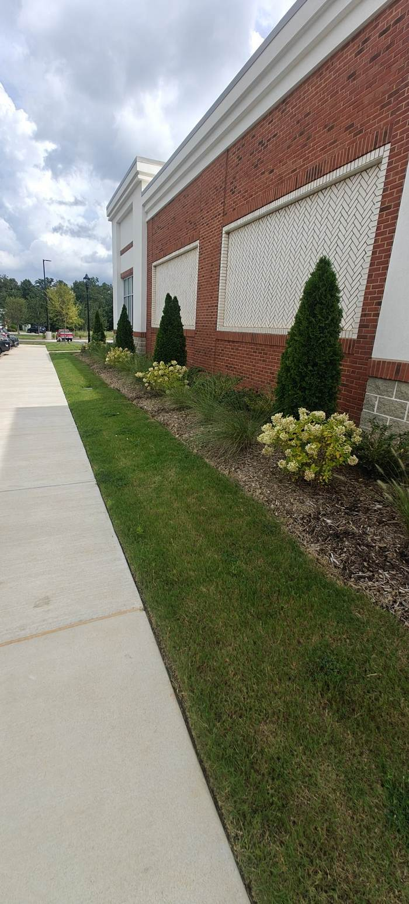

EXP-01
Andola Landscape Services OPERATING BUSINESS
$43.6K revenue and $20.6K net in the first eight months on the books, a 47% net margin. If a number is not in QuickBooks, I do not put it on this page.

Darek Anderson
I’m a 20-year-old builder running a real landscaping business and shipping real software, with AI as the leverage. This site is the logbook: every experiment, labeled honestly.
Nº 01
Three proofs you can check, not three promises.
EXP-01
$43.6K revenue and $20.6K net in the first eight months on the books, a 47% net margin. If a number is not in QuickBooks, I do not put it on this page.

EXP-02
A timeout used to be treated as a verdict and work was genuinely lost. Since v0.9.14 a timeout is a state, not a verdict: the worktree auto-checkpoints and late results revise the record.
EXP-07
An automated YouTube Shorts factory that publishes two videos a day, produced end to end without me touching it.
Nº 02
What the systems are doing, stated plainly.
WILDCLASH ARENA Publishes two Shorts daily, at 09:00 and 17:00 ET
DEAL SNIPERS Latest verified deal: [latest deal posted on Telegram]
ANDOLA Latest job: patio extension, Oct 2026
FIELD NOTES Newest note: Oct 2026
Nº 03
Seven entries. One operating business, six systems, every status honest.
PLATE 01, TURF AND BEDS, NOVANT HEALTH, WESLEY CHAPEL
EXP-01
OPERATING BUSINESS
A commercial and residential landscaping company in the Charlotte area.
EXP-02
LIVE, OPEN SOURCE
A bridge that lets an AI architect on my phone drive Cline in VS Code on my PC, through GitHub.
EXP-03
IN DEVELOPMENT
An AI bookkeeping plugin for QuickBooks Online that keeps small-business books clean in the background.
EXP-04
IN DEVELOPMENT
An AI outbound engine that finds prospects and turns cold outreach into booked meetings.
EXP-05
IN DEVELOPMENT
Productized website design for Charlotte home-service companies, built by AI and audited by humans.
EXP-06
LIVE PIPELINE
A multi-agent system that hunts deep discounts, verifies them, and posts the real ones automatically.
EXP-07
LIVE PIPELINE PROOF OF CONCEPT
An automated YouTube Shorts factory: scripts, footage, edit, captions, sound, publish. I never touch it.
Nº 04
One door for each visitor.
I
Why back me: I run a real business with real revenue, I ship real software that runs without me, and I do it with AI leverage that most teams haven’t figured out how to use. Everything claimed on this page is verifiable: the business, the repos, the pipelines, the numbers I chose to publish.
I’m not specifically raising money for anything. But I’d love a grant or a partnership or anything: I’m looking to combine resources to build. I have all these different ideas and capabilities, and they can be put to use if I’m given resources. I’m putting what I’m doing out there to attract that. But it’s not even just about getting money. I’m going to build either way, with my own businesses.
II
I’m open to founder partnerships, business development, and AI automation work. What I bring: I can run the business side and build the system side, and I have the receipts for both. If you need someone who thinks in webs and ships without being managed, that’s me.
III
I publish field notes from the work: what’s actually working with AI, found empirically, no hype. Follow along on X and check the notes feed here.